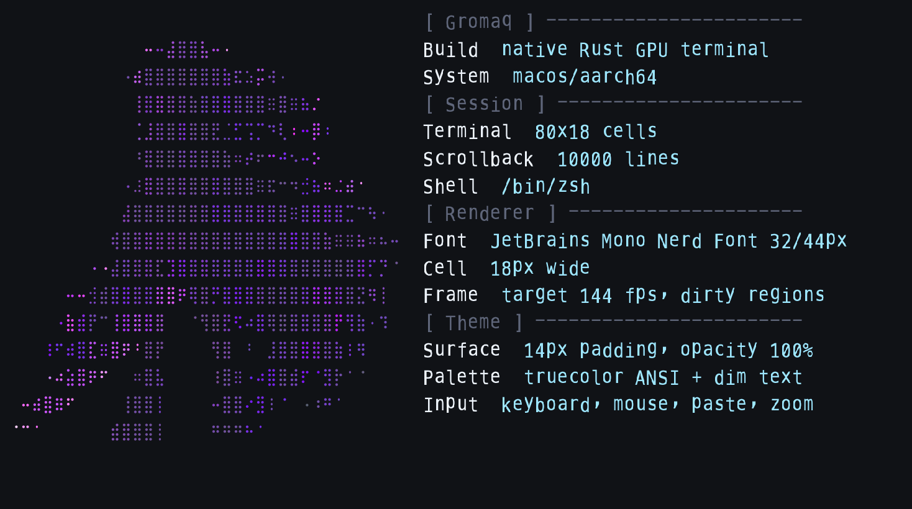

macOS or Linux release
No Rust required on the macOS app path. Linux installs the release tarball.
curl -fsSL https://raw.githubusercontent.com/vicotrbb/gromaq/main/scripts/install.sh | GROMAQ_INSTALL_METHOD=release GROMAQ_VERSION=v0.2.1 shNative Rust GPU terminal
Gromaq is a native terminal emulator built with Rust, winit, wgpu, real PTYs, and proof-backed release discipline. Version 0.2.1 is installable now as a public alpha/beta foundation release.

Install
Use the release installer for macOS or Linux. It verifies published checksum manifests by default.
No Rust required on the macOS app path. Linux installs the release tarball.
curl -fsSL https://raw.githubusercontent.com/vicotrbb/gromaq/main/scripts/install.sh | GROMAQ_INSTALL_METHOD=release GROMAQ_VERSION=v0.2.1 shContributor path for macOS and Linux systems with Rust stable installed.
curl -fsSL https://raw.githubusercontent.com/vicotrbb/gromaq/main/scripts/install.sh | shWhat works today
Grid state, scrollback, resize reflow, alternate screen, selection, copy, and clipboard boundaries.
SGR colors, cursor movement, mouse reporting, bracketed paste, and Unicode wide or emoji cluster handling.
PTY shell startup, input/output pump, resize propagation, large output, keyboard/mouse mapping, and live config reload.
Swash rasterization, glyph atlas/cache, wgpu bootstrap, Linux tarballs, Debian packages, Arch metadata, macOS app zips, and checksums.
Packages
Public alpha/beta release. Developer ID notarization is not claimed for v0.2.1.
Open v0.2.1 releaseDocs